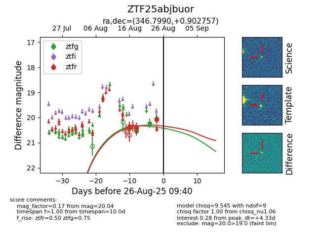

Target ZTF25abjbuor at 2025-08-26 09:40, see:
FINK: fink-portal.org/ZTF25abjbuor
Lasair: lasair-ztf.lsst.ac.uk/objects/ZTF25abjbuor
ALeRCE: alerce.online/object/ZTF25abjbuor
alt names
ZTF25abjbuor (ztf,fink)
coordinates:
equatorial (ra, dec) = (346.7990,+0.90276)
galactic (l, b) = (76.8916,-52.39349)
photometry
last ztfg=20.04, ztfr=20.08
5 ztfg, 3 ztfr detections
